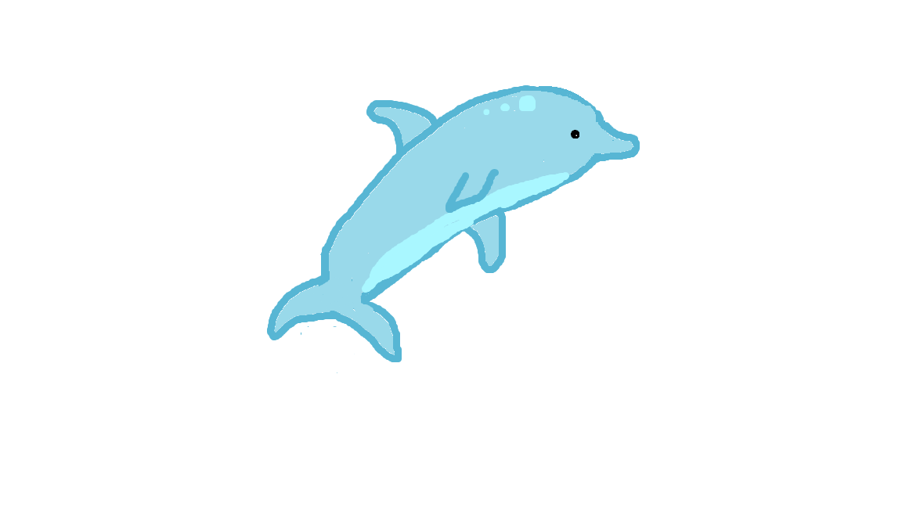

Mērķis ir pēldēt un lekt pāri korāļiem viņiem nepieskaroties un vākt zvaigznes.
Spēlētājs var vākt punktus krājot zvaigznes.
Skaņa spēlēs kad spēlētājs svāks zvaigzni.
Spēlētājs spēlē ar bultiņām uz klaviatūras.

Skaņas efekta nozīme spēlē:
Punkti: 0